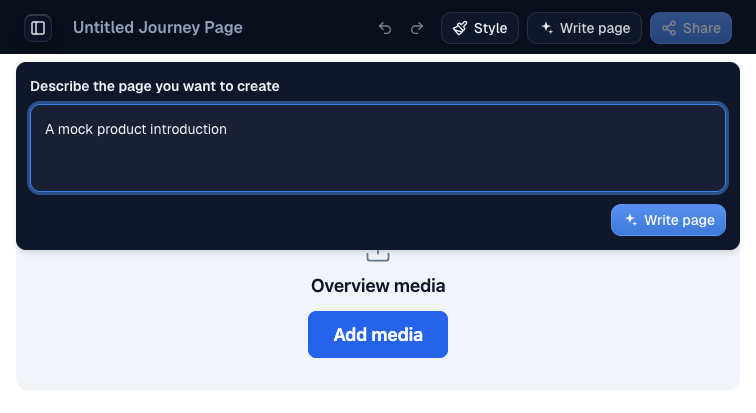
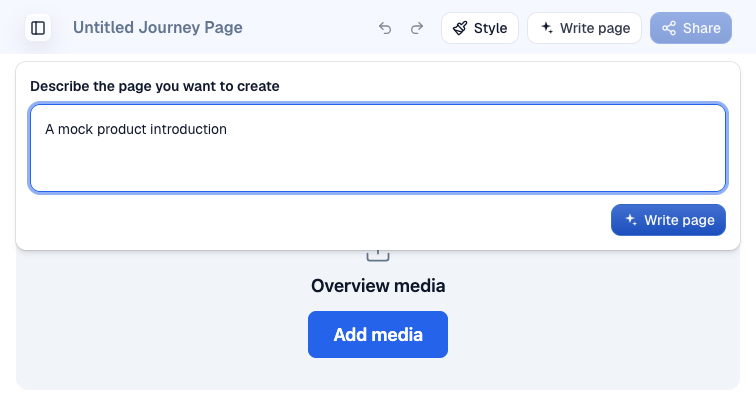
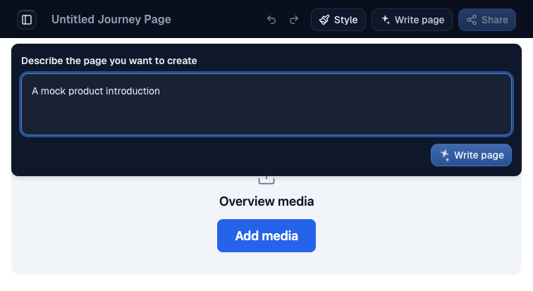

> *This was generated by AI during implementation.* ## Proof Issue #1209. Routing steer. No human sign-off. Head 2ea76ccb7c46a591359530a8e879272d6eb5869e. Repro is the signed-in /new editor. Open Write page, type mock text without submitting, then inspect its enabled default Button in both themes at rest and hover. Before is from staging, which runs main. Staging reported 66af49adf on main when these were checked on 2026-11-01, and main did not move between the capture and that check. After on https://pr-1590.clarity-video.workers.dev passed doctor with matching head and authenticated identity. Screenshot background samples at x + 8 and y + 3, midpoint and height - 4 clear 4.5:1. Ratios use rendered RGB background pixels and the computed label color oklch(0.985 0 0), not antialiased edge pixels. | Side | Theme | State | Top | Middle | Bottom | | --- | --- | --- | --- | --- | --- | | before | light | rest | 4.148 | 4.765 | 5.490 | | before | light | hover | 3.694 | 4.303 | 5.006 | | before | dark | rest | 3.076 | 3.483 | 3.959 | | before | dark | hover | 2.826 | 3.183 | 3.558 | | after | light | rest | 5.405 | 6.282 | 7.218 | | after | light | hover | 4.750 | 5.622 | 6.639 | | after | dark | rest | 5.322 | 6.153 | 7.122 | | after | dark | hover | 4.691 | 5.546 | 6.502 | Red to green test `node --test scripts/button-contrast.test.mjs` used the PR test with the merge-base CSS at 66af49adf5da8ca3704ea733b6277b4aa3966766. Before `# tests 10`, `# pass 0`, `# fail 10`. Head `# tests 10`, `# pass 10`, `# fail 0`. The new blue looks darker and more muted, especially in dark mode. William still chooses the color at https://willayam.github.io/clarity-design-previews/button-contrast-1209/ . Verdict PASS+NOTES. See the PR for who gave it. Waved through: none. PR: https://github.com/Clarity-Video-HQ/clarity/pull/1590


